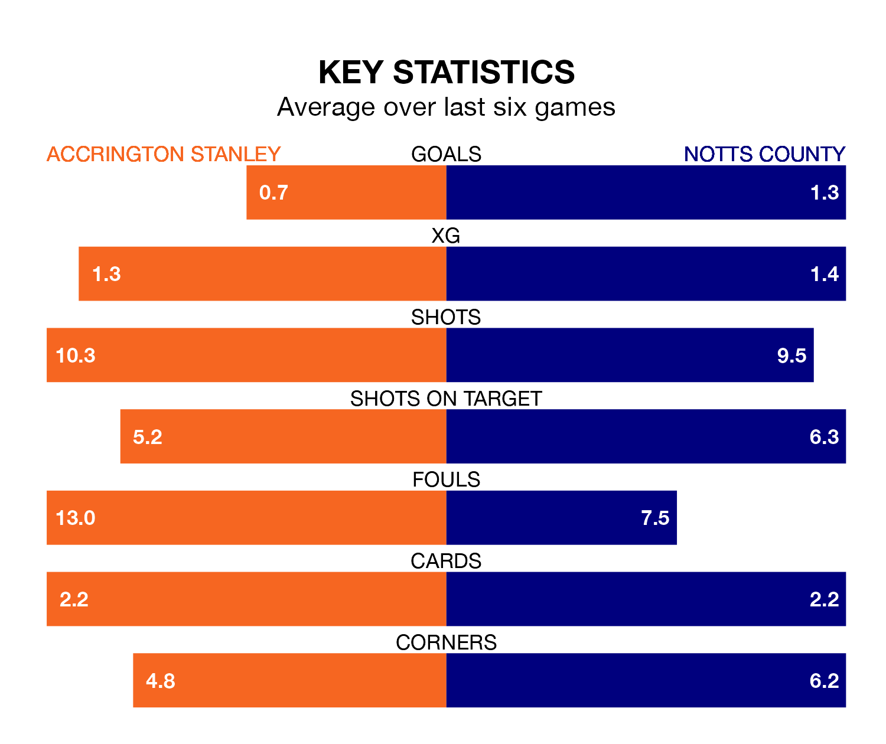

Notts County make the journey to the Wham Stadium to play Accrington Stanley on Saturday looking to pick up points to end their five-game losing streak.
County's struggles have left them with just three points from their last six EFL League Two matches, while their opponents have earned four from a possible 18.
With 70 goals in 36 games so far this season, County are the league's second-highest scorers with 1.9 goals per game. But they are conceding more than average too, letting in 70 goals at a rate of 1.9 per game.
Accrington, meanwhile, are below average scorers, with 1.3 goals per game, compared to a league average of 1.5. They have conceded 1.4 goals per game.
In Macaulay Langstaff, the visitors have the league's sharpest shooter so far this season. He has notched 23 goals in 36 appearances.
His goal rate of one every 137 minutes is quicker than that of Jack Nolan, Stanley's top scorer with a goal every 202 minutes, and a total of 13 goals in 36 games.
In the last 10 years, Accrington and County have played each other on nine occasions. Accrington won five of them, County one, and they drew three times.
On average, Accrington scored 1.6 goals and County 1.0 in those matches.
Their last meeting was on September 2, when County won 3-1 at home.
County are 17th in the table after 36 games, of which they have won 14 and drawn five, earning 47 points.
The home side are two places ahead of County in 15th, with 14 wins and seven draws putting them on 49 points.
Accrington's last match was on Tuesday, a 2-1 win against Swindon Town, with Alex Henderson and Nolan getting the goals for Accrington.
County lost 2-1 against Crawley Town last time out, also on Tuesday, with Samuel Joseph Austin on the scoresheet.
Updated: 15:10 (UTC), 15/03/24